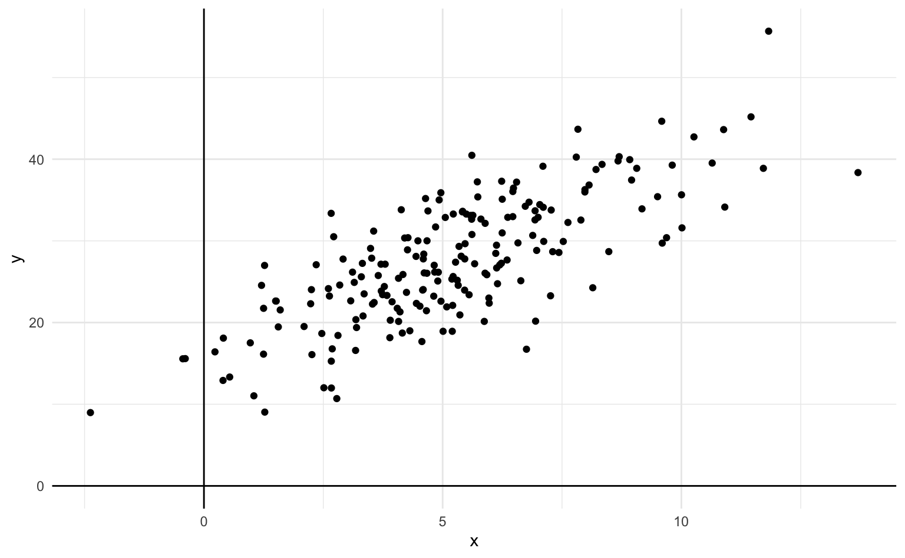
Gráfico de dispersão
O gráfico de dispersão mapeia pares de pontos num plano bidimensional. A principal utilidade deste tipo de gráfico é deixar evidente qual a relação entre as duas variáveis escolhidas.
Em geral, colocamos a variável explicativa (regressor) no eixo horizontal e a variável explicada (resposta) no eixo vertical.
Neste post vamos entender como montar gráficos de dispersão no R usando o pacote ggplot2. Primeiro vamos trabalhar um exemplo, passo a passo, para explorar uma base de preços de imóveis. Vamos entender como customizar o gráfico, variando as cores, os formatos e o tamanho dos círculos; além disso, vamos montar um gráfico de dispersão junto com uma linha de regressão.
R
O primeiro passo é instalar o pacote ggplot2. O R funciona como um repositório de pacotes: cada pacote é como uma família de funções. Em geral, cada pacote tem uma finalidade específica. O ggplot2 contém uma série de funções que permitem a construção de gráficos.
O R tem um funcionalidade embutida que facilita o download e a instalação de pacotes. Usamos a função install.packages("nome_do_pacote"). Então, para instalar o ggplot2 executamos o código abaixo.
Se você estiver usando o R fora do RStudio é provável que a função abaixo solicite que você escolha um servidor a partir de uma lista. Escolha o que for mais próximo - geograficamente - de onde você está. No meu caso eu sempre utilizo o “Brazil (SP 1) [https] - University of Sao Paulo, Sao Paulo”. Se você usa o R dentro do RStudio pode ignorar este passo.
# Instalar o pacote ggplot2 (se necessário)
install.packages("ggplot2")A cada vez que abrimos o R precisamos carregar os pacotes adicionais que instalamos previamente. Isto pode parecer trabalhoso à primeira vista, mas faz muito sentido: evita conflitos entre pacotes e é mais eficiente.
Para carregar o ggplot2 usamos a função library (biblioteca).
# Carrega o pacote ggplot2
library(ggplot2)Enquanto a maioria dos pactoes funciona como repositórios de funções alguns servem como repositórios de bases de dados. É o caso do pacote wooldridge que carrega as bases de dados utilizadas no livro Introductory Econometrics: A Modern Approach do economista Jeffrey Wooldridge.
# Instalar o pacote ggplot2 (se necessário)
install.packages("wooldridge")
# Carregar o pacote wooldridge
library(wooldridge)Nos primeiros exemplos abaixo vamos trabalhar com a base de dados hrpice1 que coleta informações de preços de venda de imóveis na região metropolitana de Boston, nos EUA, em 1990. Para carregar a base usamos a função data().
data("hprice1")Visualização e análise de dados são habilidades complementares. Aqui, vamos nos focar apenas nas habilidades visuais.
A função head(), quando aplicada a um objeto data.frame mostra as primeiras linhas da tabela. Há muitas colunas mas vamos focar inicialmente na price que é o preço em milhares de dólares e na coluna sqrft que é o tamanho do imóvel em pés quadrados.
head(hprice1) price assess bdrms lotsize sqrft colonial lprice lassess llotsize
1 300.000 349.1 4 6126 2438 1 5.703783 5.855359 8.720297
2 370.000 351.5 3 9903 2076 1 5.913503 5.862210 9.200593
3 191.000 217.7 3 5200 1374 0 5.252274 5.383118 8.556414
4 195.000 231.8 3 4600 1448 1 5.273000 5.445875 8.433811
5 373.000 319.1 4 6095 2514 1 5.921578 5.765504 8.715224
6 466.275 414.5 5 8566 2754 1 6.144775 6.027073 9.055556
lsqrft
1 7.798934
2 7.638198
3 7.225482
4 7.277938
5 7.829630
6 7.920810ggplot2
A estrutura de um gráfico do ggplot2 parte de três elementos básicos: (1) uma base de dados, isto é, um objeto data.frame; (2) um mapeamento de variáveis, feito com auxílio da função aes(); (3) a escolha da forma do gráfico, feito com as funções geom.
O ggplot2 funciona adicionando camadas sobre um gráfico inicial.
Começamos com a função ggplot() e vamos adicionando geoms, funções auxiliares que especificam a forma do gráfico. Este processo construtivo de adicionar elementos a um gráfico é o principal diferencial do ggplot.
Ou seja, temos três elementos básicos
- Dados - nossa tabela de dados.
- Função
aes()- que transforma os dados em objetos visuais. - Objeto geométrico (
geom) - que escolhe qual o formato destes objetos visuais.
Esta estrutura básica é esquematizada no pseudo-código abaixo.
ggplot(data = base_de_dados, aes(x = variavel_x, y = variavel_y)) +
geom_point()No nosso caso a base de dados é a hprice1 e as variáveis são sqrft e price.
Temos que informar isto usando data = hprice e aes(x = sqrft, y = price).
Por fim, como queremos um gráfico de dispersão escolhemos o geom_point(). Esta última chamada é adicionada à função inicial com o sinal de soma +.
O código abaixo junta todos estes elementos e resulta num gráfico de dispersão entre o tamanho do imóvel (sqrft) e seu preço de venda (price).
ggplot(data = hprice1, aes(x = sqrft, y = price)) +
geom_point()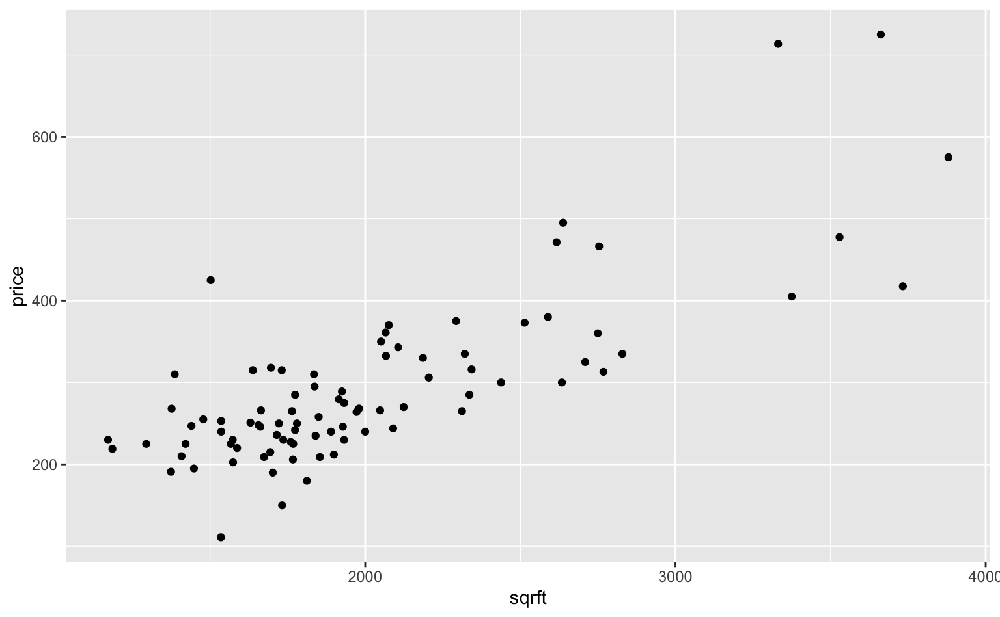
O gráfico acima ainda está bastante cru e podemos melhorá-lo de diversas formas. Ainda assim, ele já é interessante: revela uma relação crescente entre o tamanho do imóvel e do seu preço de venda.
Elementos estéticos
Podemos customizar um gráfico de ggplot modificando os seus elementos estéticos. Um elemento estético pode assumir dois tipos de valor: constante ou variável. Um valor constante é um número ou texto, enquanto uma variável é uma coluna da nossa base de dados.
São quatro os principais elementos estéticos que podemos manipular no caso do geom_point:
color- a cor do objetoalpha- a transparência da corsize- o tamanho do objetoshape- o formato do objeto
Quando executamos o código acima o valor destes parâmetros foi definido automaticamente. Podemos modificá-los chamando eles explicitamente.
Color - cores
A maneira mais simples de alterar as cores é chamando ela por nome. No exemplo usamos a cor steelblue. Uma lista completa de cores está disponível aqui.
ggplot(data = hprice1, aes(x = sqrft, y = price)) +
geom_point(color = "steelblue")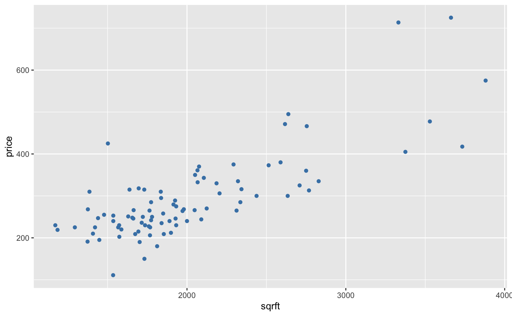
Também é possível escolher a cor via hexadecimal.
ggplot(data = hprice1, aes(x = sqrft, y = price)) +
geom_point(color = "#e76f51")Alpha - transparência
O parâmetro alpha controla o nível de transparência da cor. Este artifício costuma ser útil para evitar que muitos pontos fiquem sobrepostos (overplotting).
ggplot(data = hprice1, aes(x = sqrft, y = price)) +
geom_point(color = "steelblue", alpha = 0.5)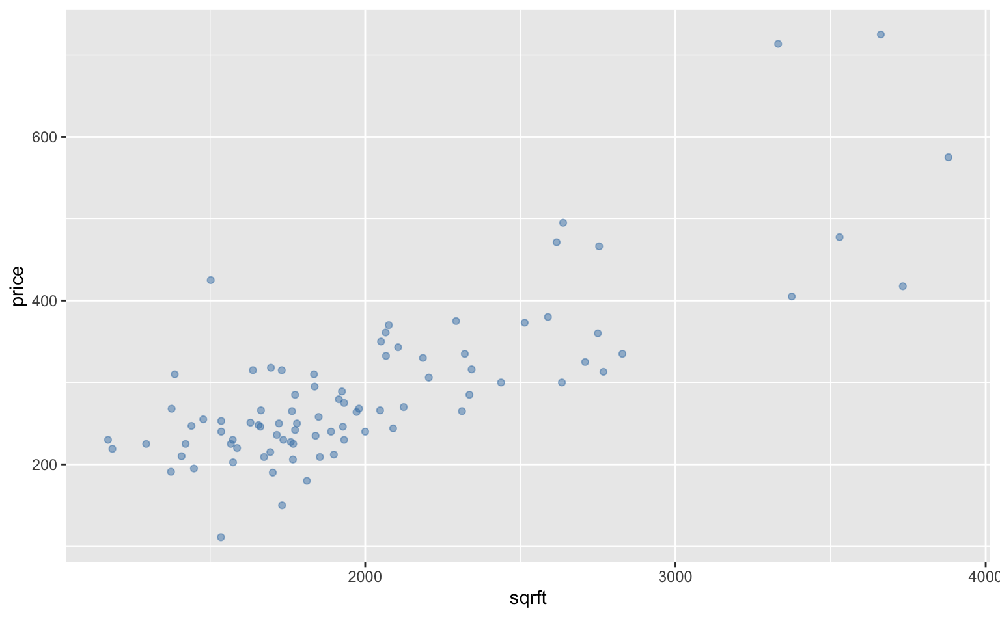
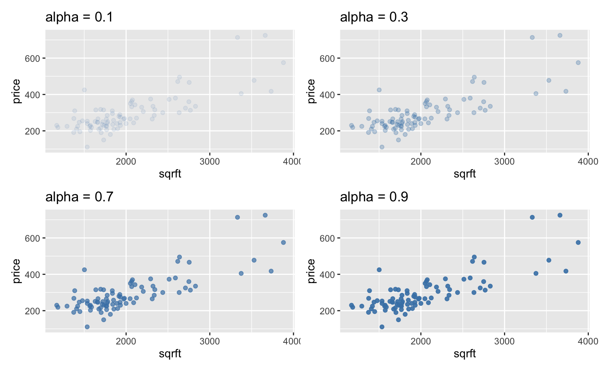
Size - tamanho
Podemos manipular o tamanho dos pontos usando size e ajustando o valor numérico.
ggplot(data = hprice1, aes(x = sqrft, y = price)) +
geom_point(color = "steelblue", size = 5)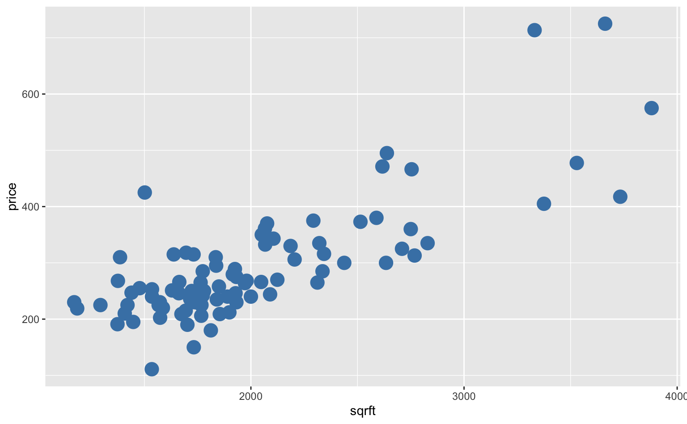
Agora que os círculos estão maiores há mais casos de sobreposição. Uma solução para evitar isto é aplicar algum valor de alpha.
ggplot(data = hprice1, aes(x = sqrft, y = price)) +
geom_point(color = "steelblue", size = 5, alpha = 0.5)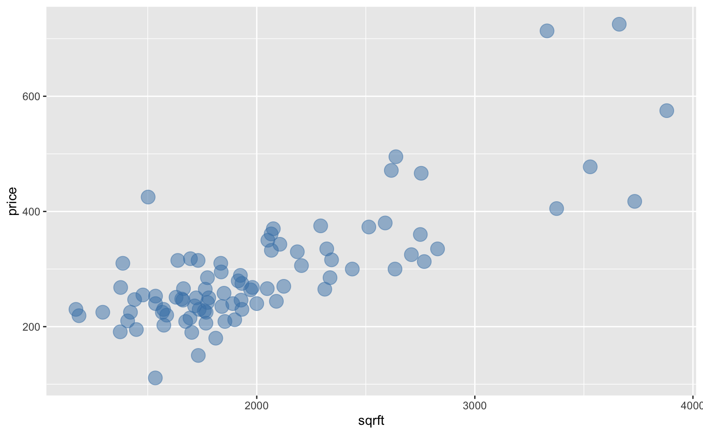
Shape - formato
Por padrão o formato do geom_point é um círculo mas há muitas outras opções. Para trocar o formato do objeto usamos shape = 2
ggplot(data = hprice1, aes(x = sqrft, y = price)) +
geom_point(shape = 2)O gráfico abaixo ilustra os principais tipos de formatos disponíveis.
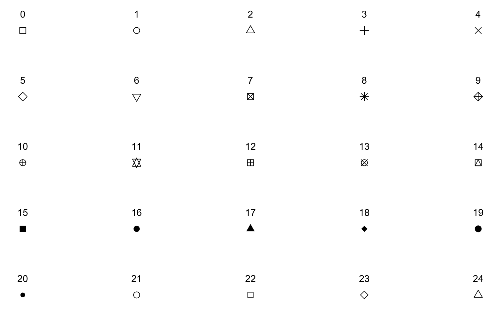
Note que em alguns casos como o 21 é possível controlar tanto a cor do contorno do círculo como também da cor de dentro.
ggplot(data = hprice1, aes(x = sqrft, y = price)) +
geom_point(shape = 21, color = "steelblue", fill = "orange")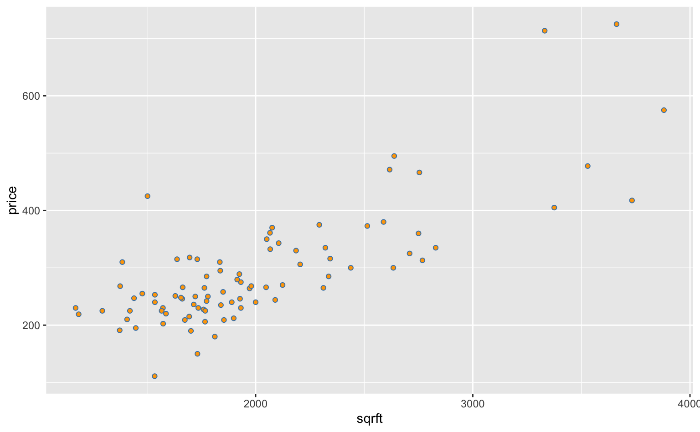
Combinando todos os elementos
O gráfico abaixo serve apenas para ilustrar o uso de todos os parâmetros. Naturalmente, o uso destes elementos estéticos deve favorecer o melhor entendimento do gráfico e não deve ser utilizado de forma gratuita.
ggplot(data = hprice1, aes(x = sqrft, y = price)) +
geom_point(
shape = 21,
color = "steelblue",
fill = "orange",
size = 7,
alpha = 0.75)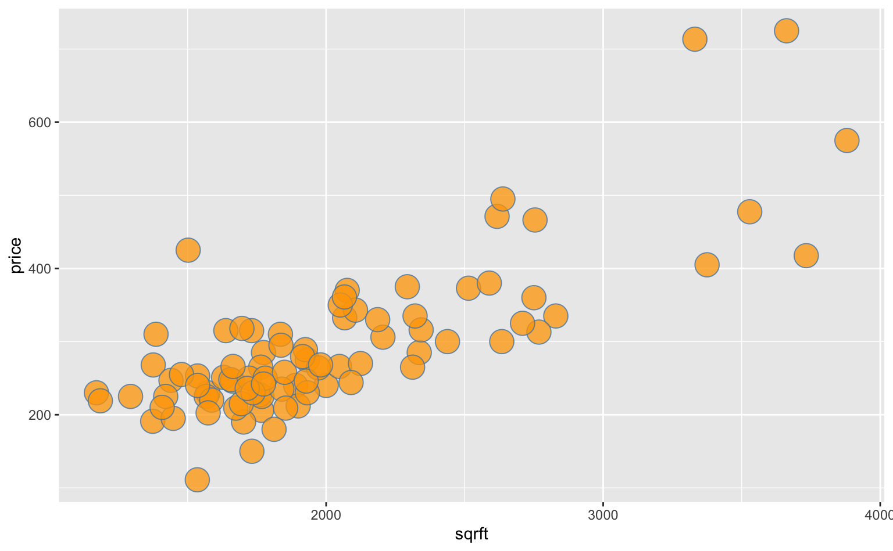
Usando cores para representar variáveis
Os elementos estéticos também podem ser utilizados para representar variáveis nos dados. Vamos voltar para a função aes. Como expliquei acima, esta função “transforma” nossos dados em elementos visuais. Nos casos acima, ela mapeia as variáveis x e y nas suas respectivas coordenadas.
Mas podemos mapear as variáveis nos elementos estéticos: color, alpha, size, shape.
Vamos primeiro voltar à nossa base de dados. Olhando para as primeiras linhas vemos que há uma coluna chamada colonial que é uma variável binária que indica se o estilo arquitetônico do imóvel é colonial.
head(hprice1) price assess bdrms lotsize sqrft colonial lprice lassess llotsize
1 300.000 349.1 4 6126 2438 1 5.703783 5.855359 8.720297
2 370.000 351.5 3 9903 2076 1 5.913503 5.862210 9.200593
3 191.000 217.7 3 5200 1374 0 5.252274 5.383118 8.556414
4 195.000 231.8 3 4600 1448 1 5.273000 5.445875 8.433811
5 373.000 319.1 4 6095 2514 1 5.921578 5.765504 8.715224
6 466.275 414.5 5 8566 2754 1 6.144775 6.027073 9.055556
lsqrft
1 7.798934
2 7.638198
3 7.225482
4 7.277938
5 7.829630
6 7.920810Podemos plotar o mesmo gráfico de dispersão mas fazer com que a cor do círculo represente a variável colonial. No gráfico abaixo, os pontos em azul são imóveis com estilo colonial, enquanto que os pontos em vermelho (salmão) são os imóveis de outros estilos.
Vemos que parece haver uma tendência de que os imóveis coloniais vendem por valores mais elevados, pois os pontos azuis aparecem acima dos pontos vermelhos, mas há exceções. Isso sugere que imóveis de estilo colonial têm preço mais elevado do que imóveis de tamanho similar, mas construídos em estilos diferentes.
Este exemplo mostra como a visualização ajuda a formar algumas hipóteses iniciais que depois podem ser verificadas usando modelos estatísticos.
ggplot(data = hprice1, aes(x = sqrft, y = price)) +
geom_point(aes(color = factor(colonial)))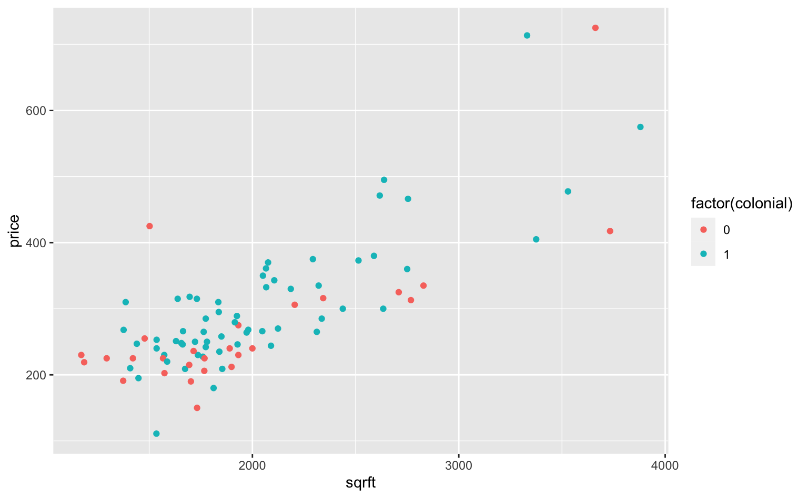
Da mesma forma que modificamos a cor podemos modificar o tamanho segundo, por exemplo, o número de dormitórios.
No exemplo abaixo o tamanho do círculo é proporcional ao número de dormitórios.
ggplot(data = hprice1, aes(x = sqrft, y = price)) +
geom_point(aes(size = bdrms), alpha = 0.5)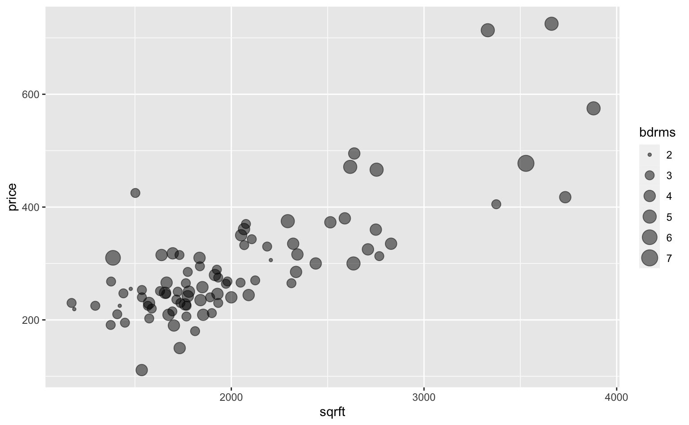
Renomeando os eixos do gráfico
É muito importante que um gráfico seja o mais auto-explicativo possível. Para isso precisamos inserir informações relevantes como título, subtítulo e fonte.
A função labs() permite facilmente renomear os eixos do gráfico. Os argumentos principais são os abaixo.
title- título do gráficosubtitle- subtítulo do gráficox- título do eixo-x (horizontal)y- título do eixo-y (vertical)caption- legenda abaixo do gráfico (em geral, a fonte)
Novamente, utilizamos o sinal de soma para adicionar estes elementos ao gráfico.
ggplot(data = hprice1, aes(x = sqrft, y = price)) +
geom_point() +
labs(
title = "Quanto maior, mais caro",
subtitle = "Relação entre o preço do imóvel e sua área útil.",
x = "Área útil (pés quadrados)",
y = "Preço (USD milhares)",
caption = "Fonte: Wooldridge (Boston Globe)"
)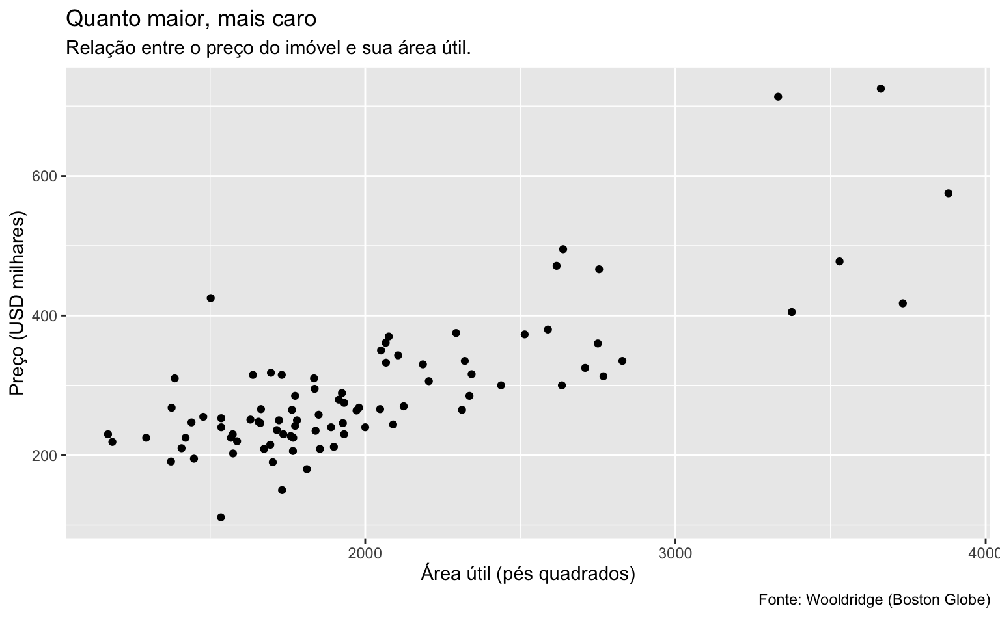
Incluindo uma linha de regressão
Como falamos no início do post, parte da mágica do ggplot é ir “somando” objetos. Podemos desejar incluir, por exemplo, uma linha de regressão em cima do gráfico de dispersão. No caso de uma regressão linear simples, esta linha mostra a correlação linear entre a variável no eixo horizontal com a variável no eixo vertical.
A função geom_smooth facilita a inclusão de linhas de regressão. Se não for fornecido argumento à função ela tentará uma aproximação LOESS. No exemplo abaixo eu escolho method = "lm" para que a função aproxime a relação linear (lm de linear model).
No nosso caso, a linha mostra a relação linear entre o preço do imóvel e a sua área útil. O argumento se = FALSE serve para omitir a estimativa do erro-padrão do coeficiente e deixar a visualização mais limpa.
ggplot(data = hprice1, aes(x = sqrft, y = price)) +
geom_point() +
geom_smooth(method = "lm", se = FALSE)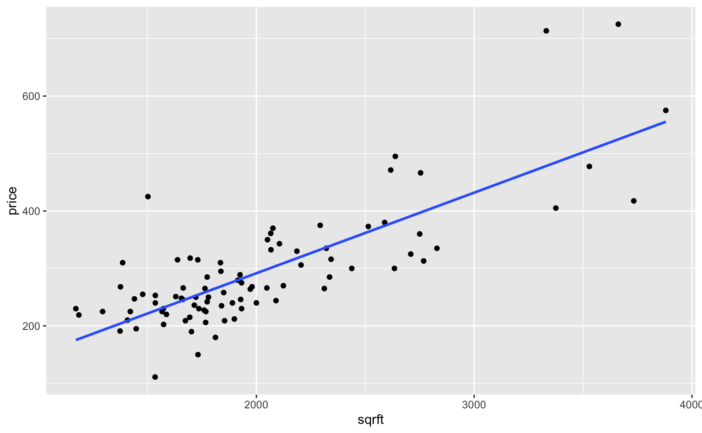
Pode-se especificar uma forma particular para a regressão. No caso abaixo faço uma regressão polinomial de segunda ordem (quadrática) usando a função poly.
ggplot(data = hprice1, aes(x = sqrft, y = price)) +
geom_point() +
geom_smooth(formula = y ~ poly(x, 2), method = "lm", se = FALSE)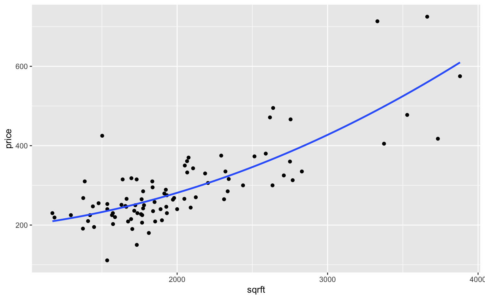
A curva quadrática parece ter um ajuste visual melhor aos dados.
Resumo
Neste post aprendemos o básico da estrutura sintática do ggplot e conseguimos montar gráficos de dispersão sofisticados usando poucas linhas de código. Em qualquer gráfico temos três elementos básicos
- Dados - nossa tabela de dados.
- Função
aes()- que transforma os dados em objetos visuais. - Objeto geométrico (
geom) - que escolhe qual o formato destes objetos visuais.
Seguindo esta lógica e somando os objetos podemos criar belos gráficos.
ggplot(data = hprice1, aes(x = sqrft, y = price)) +
geom_point(color = "#e63946", alpha = 0.75, size = 2) +
geom_smooth(formula = y ~ poly(x, 2), method = "lm", se = FALSE) +
labs(
title = "Quanto maior, mais caro",
subtitle = "Relação quadrática entre o preço do imóvel e sua área útil.",
x = "Área útil (pés quadrados)",
y = "Preço (USD milhares)",
caption = "Fonte: Wooldridge (Boston Globe)"
)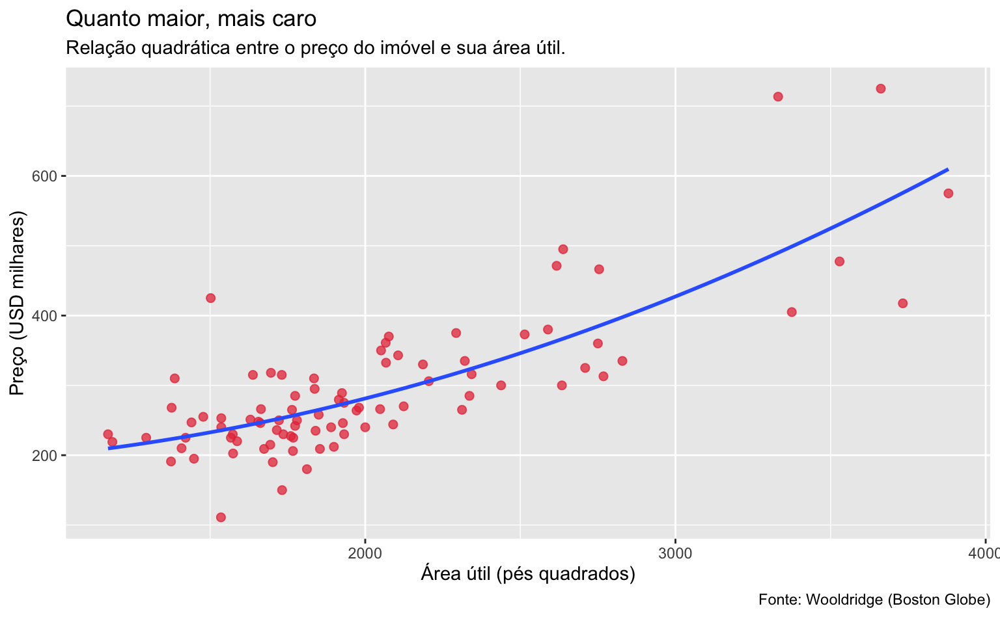